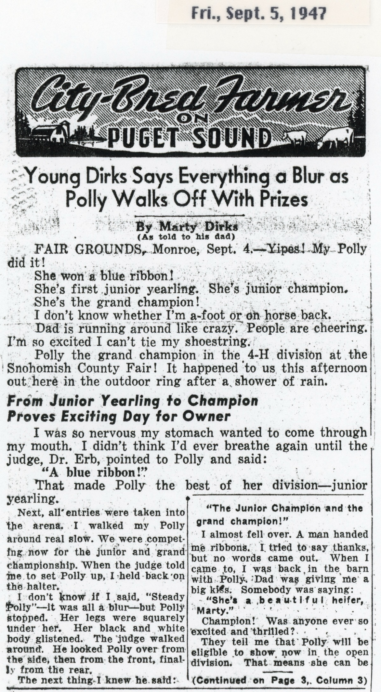

WINNER—Marty Dirks, son of Clarence Dirks, the “City Bred Farmer” whose column appears in The Post-Intelligencer, receives blue ribbon from Snohomish County Agent Arnold Z. Smith at county fair while his cherished heifer, Polly, looks on. Polly6 was adjudged grand champion at Monroe yesterday. – (Post Intelligencer Photo by Ken Harris)